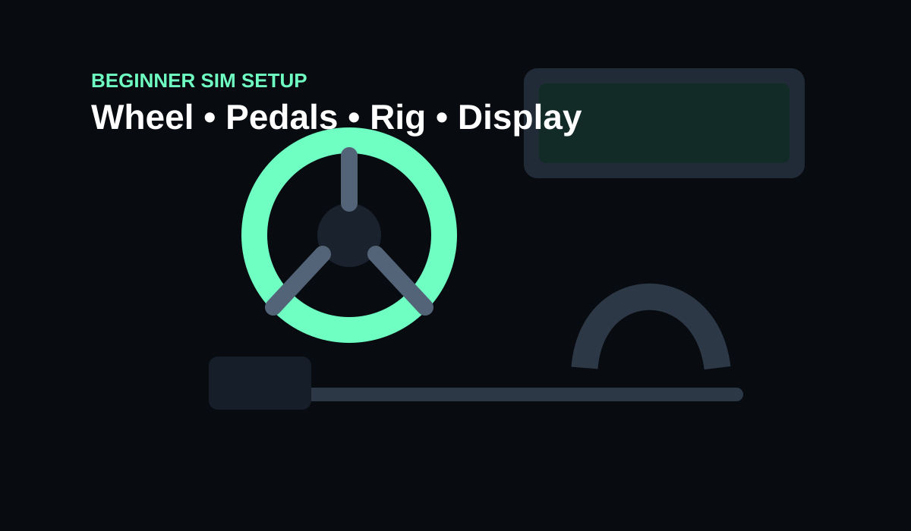

Start with a wheel and pedals you can mount securely, then improve braking feel and seating stability before chasing more wheel torque. For PC, the MOZA R5 and Fanatec CSL DD 5 Nm are logical entry direct-drive options. Console buyers need to choose around platform compatibility first.
- You want a sensible first rig rather than buying every accessory
- You will prioritise stability, pedals and seating
- You prefer an upgrade path that can grow in stages
- You are spending most of the budget on peak wheel torque
- You have no plan for pedal or chair movement
- You are buying niche accessories before the core setup works
Key specs & facts
| Wheelbase | Entry direct drive where budget allows |
|---|---|
| Pedals | Stable mounting before high brake force |
| Display | Single monitor is enough to start |
| Upgrade order | Pedals / mounting before chasing torque |
1. Decide your platform before buying anything
PC gives the widest hardware choice. The MOZA R5 bundle is listed for PC. Fanatec's CSL DD supports PC and can support Xbox when paired with an Xbox-licensed Fanatec wheel, but this CSL DD base is not PlayStation compatible. Thrustmaster's T300RS GT supports PS5, PS4 and PC.
2. Wheel and pedals
Direct drive is now attainable at beginner budgets. MOZA's R5 is rated at 5.5 Nm and Fanatec's CSL DD at 5 Nm, with an 8 Nm upgrade available for the Fanatec base. A discounted Logitech G923 remains a simple mainstream option, but its rated torque is lower at 2.3 Nm.
3. Mounting matters more than people expect
A stronger wheel on a flimsy desk can feel worse than a weaker wheel mounted properly. The MOZA R5 bundle includes a table clamp; Fanatec's CSL DD table clamp is optional. Once you move to load-cell pedals, a rigid pedal plate and seat become much more important.
4. Display
Do not blow the budget on a huge display while using poor pedals and a moving office chair. A basic high-refresh monitor gets you racing; ultrawide or triples can come later.
5. Upgrade order
- Secure mounting and seating
- Better brake pedal / load cell
- Display field of view
- More wheel torque
- Shifter, handbrake and specialist rims
A sensible first-budget split
Do not treat the wheelbase as the whole simulator. A stable wheel mount, pedals that cannot slide and a seat that does not roll backwards determine whether the controls feel consistent. It is better to run a modest direct-drive base on a stable platform than a stronger motor attached to furniture that flexes.
Upgrade order that usually works
Start with stability and ergonomics. Next improve braking, then consider wheel rims, shifters and handbrakes that match the cars you actually drive. More torque comes later when the structure can use it.
Buy for the games and platform you actually use
Console licensing can decide the ecosystem before torque or price enters the discussion. PC users have broader mixing options; console users should verify exact wheelbase and wheel compatibility before ordering anything.

MOZA R5 Pro Racing Simulator
Compact 6 Nm starter route for a PC-first setup.

Sim Racing Wheel Stand
A stable mount can improve the whole setup before more torque.
Amazon prices and availability change frequently, so we show a current Amazon UK link rather than copying a price that may be stale.

MOZA R5 vs Fanatec CSL DD 5 Nm: Which Beginner Direct-Drive Bundle Is Better?
Read next →
Logitech G923 vs Direct Drive in 2026: Is the G923 Still Worth Buying?
Read next →
MOZA R3 vs R5: Is 3.9 Nm Enough or Should You Start at 5.5 Nm?
Read next →Sources
Key specifications and factual claims are checked against manufacturer or primary-source material where available.
About this article
This page is a researched guide or comparison, not a claim of hands-on testing unless we explicitly say otherwise. Product specifications and availability can change, so important buying details are checked against current source material when the article is updated. Affiliate availability does not determine the underlying recommendation.